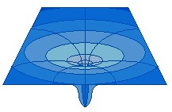
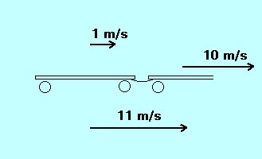
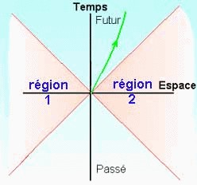

Vũ trụ của Newton không đầy đủ nhưng dù sao cũng đã cho phép những phát triển trong ngành Thiên văn. Vũ trụ Newton đã không thay đổi hơn hai thế kỷ, cho đến đầu thế kỷ thứ 20, khi Einstein đề nghị thuyết Tương Ðối.
Ánh sáng lan truyền với vận tốc nhất định:
Năm 1675 Oleaus Römer là người đầu tiên đã nhận định như vậy khi ông khảo sát những vệ tinh của Jupiter và những thiên thực của chúng (éclipse) Tính chất sóng của ánh sáng được đưa ra vào thế kỷ thứ 18 , và năm 1817 Fresnel chứng tỏ rằng đó là một chuyển động ngang .
Bởi vì có sự dao động (vibration) nên ông cho rằng phải có một mặt nền (support): đó là ÉTHER, vô cùng cứng rắn nhưng hoàn toàn không có một sự chống đối nào với các thiên thể .
Năm 1887, Michelson và Morley , trong một cuộc thí nghiệm nổi tiếng, đã chứng tỏ rằng, nếu như có sự hiện diện của Éther thì trái Ðất phải có vận tốc bằng không so với chất nền này .
Những thất bại liên tiếp của Cơ học cổ điển và tính cách không thích hợp với Ðiện từ học mang đến cho Einstein thuyết Tương đối thu hẹp dựa trên những lý thuyết căn bản:
* Chuyển động đều của một vật chỉ có thể định nghĩa được khi so với một vật khác, và không thể thực hiện được nghiên cứu vật lý nào cho phép xác định vận tốc của chuyển động đó
* Vận tốc ánh sáng là tuyệt đối và toàn năng (universel).
Từ kết quả của nguyên tắc đó, luật cộng những vận tốc với nhau của Galilée trở thành sai .
Nếu một người di chuyển với vận tốc 1 mét/ giây trong tàu lửa và người này di chuyển 10 m/ giây so với người quan sát cố định, vậy thì người quan sát thấy người trong xe lửa di chuyển với vận tốc 11m /s: là luật cổ điển của sự cộng vận tốc, chỉ là một phỏng chừng cho những chuyển động có vận tốc nhỏ của Luật Tương đối.

Trong Cơ học cổ điển , nếu v là vận tốc của một vật chuyển động trong một hệ quy chiếu cũng di chuyển với vận tốc V , thì vận tốc của vật chuyển động đó đối với một hệ quy chiếu đang đứng yên được diễn tả là:
v' = v + V (1)
Trong thuyết Tương Ðối , luật tạo thành của những vận tốc trở thành:
v' = (v+V)/(1+vV/c 2 ) (2)
Lẽ đương nhiên nếu vận tốc quá nhỏ so với vận tốc ánh sáng c, thì vV/c 2 xem như không đáng kể và hai biểu thức (1) và (2) xem như bằng nhau.
Từ đó đưa ra kết luận là số đo thời gian, chiều dài và năng lượng đều tương đối, có nghĩa là số đo vận tốc chỉ riêng biệt cho từng người quan sát .
Trong phạm vi của thuyết Tương Ðối Thu hẹp, số đo không gian-thời gian được tính bằng hàm số của những tọa độ x, y, z và t dưới dạng:
ds 2 =c 2 dt 2 -dx 2 -dy 2 -dz 2
De Minkowski nói : Métrique này định nghĩa một espace-temps plat (không gian-thời gian phẳng) giống như espace-temps tuyệt đối của Newton trong đó métrique được diễn tả dưới hình thức
ds 2 =dx 2 +dy 2 +dz 2
Vậy thì khoảng cách giữa những điểm nằm TRÊN một HÌNH NÓN ÁNH SÁNG (cône de lumière) bằng không (ds=0) và chỉ những điểm nằm TRONG hình nón thì có thể gặp được (joignable) bởi vì khoảng cách ds 2 giữa hai điểm phải luôn luôn dương (số đo khoảng cách là một số hình học)

Hai đường chéo màu đỏ tạo thành hình nón ánh sáng (cône de lumière)